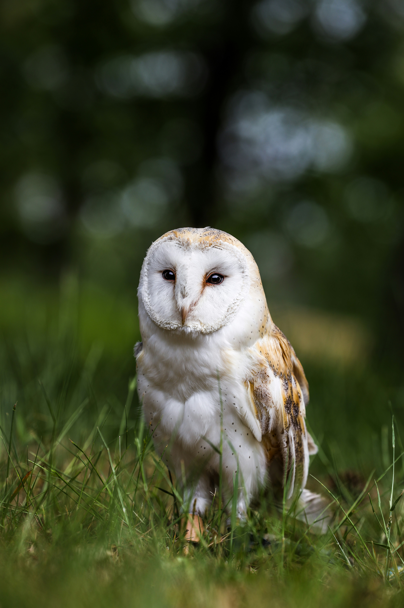

The Barn Owl is one of the world's most widespread owls and is easily recognized by its pale, heart-shaped facial disc. Its upperparts are generally golden-brown and grey, while the underparts are often pale. It is primarily nocturnal and hunts over open ground, using its exceptional hearing and vision to locate prey. Barn Owls frequently use barns, towers, buildings, tree cavities, and other sheltered places for roosting and nesting and are especially valuable to farmers because they consume large numbers of rodents. Compared with the similar Spotted Owlet, it is distinguished by the combination of features described above. Its preference for farmland, grassland, open country, villages, wetlands, and areas around buildings also helps separate it from species that use different habitats. Its characteristic behaviour, including usually hunts low over open ground and relies heavily on hearing to locate prey, provides another useful field clue. Taken together, these differences make it easier to distinguish from similar species when the bird is seen clearly.